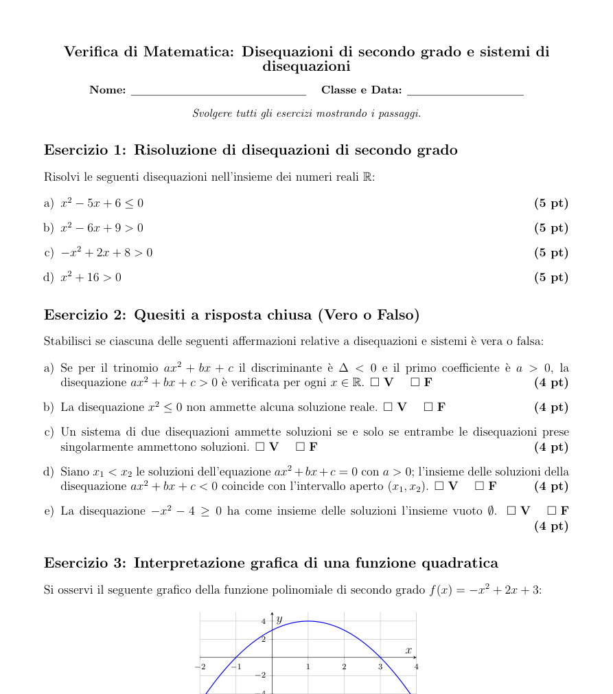

VerificAI è un servizio web per docenti: scrivi l'argomento e come vuoi la verifica, e ottieni una verifica già impaginata, con i punteggi, in PDF o in Word modificabile.

Nessuna impaginazione, nessuna tabella dei punteggi da disegnare: ci pensa VerificAI.
Per matematica, fisica, storia e le altre materie, per ogni ordine di scuola.
Crea la tua prima verifica in pochi minuti. Ti basta un indirizzo email.
Crea la tua prima verifica